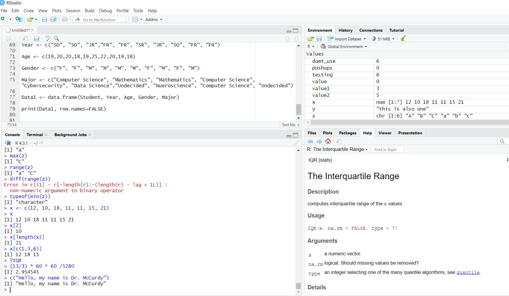

typeof(17.2)[1] "double"typeof(17L)[1] "integer"typeof(17)[1] "double"typeof("17")[1] "character"typeof(TRUE)[1] "logical"As we continue learning R, it’s important to understand how data is structured and stored. In R, everything is a vector, this includes not only sequences of numbers but also text and logical values. This design choice makes R a powerful tool for performing operations across entire datasets at once. In this section, we will explore how to create, manipulate, and understand vectors, as well as how to work with factors, which are special types of vectors used to represent categorical data. Understanding these structures will be foundational to all future data analysis you perform in R.
So far we have seen how we can create variables in R. It is important to note that all objects in R have a type (the big three are Doubles, Characters, and Logical). A benefit to R is that we do not have to declare each variable and type, as it can figure all of that information out without us needing to do anything. Doubles consist of our numbers, which can be integers or decimal values. This is not the same as floating point values in other languages though. We can coerce the value to be an integer by placing an “L” after it (but there is no real benefit right now for integers over doubles so don’t worry about it). Characters will be anything in quotes, whether it is a single letter, a word, a paragraph, a symbol, or a number. R will treat all characters the same. The last type we should discuss is the Logical type, which consists of TRUE and FALSE (yes it has to be in all caps) or the shortened T and F. If we are ever unsure of the type we are dealing with, we can use the typeof() function and R will tell us.
typeof(17.2)[1] "double"typeof(17L)[1] "integer"typeof(17)[1] "double"typeof("17")[1] "character"typeof(TRUE)[1] "logical"It is critical to know what type our value is as it will determine what functions we can use, how we compose expressions, and how we will interpret the results. For instance, we cannot do “math” on characters but we can do “math” with doubles and logicals (though it might not always make sense to do this).
"a" + "b"Error in "a" + "b" : non-numeric argument to binary operator
3 + TRUE # TRUE is equal to 1 and FALSE is equal to 0[1] 4"abc" + 2Error in "abc" + 2 : non-numeric argument to binary operator
One thing that makes R different then some other languages is that R is “vectorized” (meaning everything is a vector). This characteristic will allow us to quickly work with entire sets of data and avoids the need for iterations or loops (but the for and while loop still exist). So remember, Everything is a Vector!!!
Emmit is working at his smoothie stand and tracking sales data. What is the type of each variable and what will he get if he sums up the protien_added variable?
flavors <- c("berry", "mango", "banana")
sales <- c(12, 15, 9)
protein_added <- c(TRUE, FALSE, TRUE)
mistake <- c(sales, "error")To create a vector containing multiple elements we will use the combine function \(c()\). This will allow us to combine multiple single-element vectors into a multi-element vector. An example of this process can be seen below:
x <- c(1,2,3,4)
x[1] 1 2 3 4y <- c("Hello", "my name is", "Dr. McCurdy")
y[1] "Hello" "my name is" "Dr. McCurdy"If we create a vector with multiple types of data in it then it reverts to the “lowest” one present (character \(<\) double \(<\) logical). So, if at least one character is present then all of the elements are turned into characters, and if no characters are present but a double is then all elements turn into doubles. We can see the type a vector is using the class() function.
x <- c(1,2,"3",4,5) # One character is present
class(x)[1] "character"x[1] "1" "2" "3" "4" "5"y <- c(1, 2, TRUE, 4, 5) # TRUE is turned into a 1
class(y)[1] "numeric"y[1] 1 2 1 4 5If we need to explicitly coerce a vector to be a certain type we can (for the most part). It is the nature of vectors to apply functions on every element, so using a function like as.numeric() or as.character() will try and force all elements to become a certain type.
x <- as.numeric(c(1,2,"3",4,5)) # 3 is coerced into a number
class(x)[1] "numeric"x[1] 1 2 3 4 5y <- as.character(c(1,2,3,4,5)) # All items are coerced into characters
class(y)[1] "character"y[1] "1" "2" "3" "4" "5"Whenever we are dealing with vectors it is important to resist the urge to fight the vector’s nature. That is, don’t try and overthink it or make it more difficult for yourself, R was meant to handle vectors. All arithmetic operators can be used on vectors. It will apply the operation between comparable elements and will “recycle” the shorter vector if needed.
x <- c(1,2,3,4,5)
x[1] 1 2 3 4 5x + 13[1] 14 15 16 17 18x * -2[1] -2 -4 -6 -8 -10x <- c(1,2,3)
y <- c(5,6,7)
x + y[1] 6 8 10x^y[1] 1 64 2187x <- c(1,2,3,4,5)
y <- c(1,10,100)
x + yWarning in x + y: longer object length is not a multiple of shorter object
length[1] 2 12 103 5 15We can also make vectors that are not numeric. These can be both character strings or logical values.
x <- c("this", "is", "a", "character vector!")
x[1] "this" "is" "a"
[4] "character vector!"y <- "this is also a character vector!"
y[1] "this is also a character vector!"z <- c(T, T, F, F, T, F, T)
z[1] TRUE TRUE FALSE FALSE TRUE FALSE TRUEEmmit writes the amount of money he spends on coffee each day for a whole week. Help him put the values in a vector and then determine the prices if they increase by 25%.
\(\$4.25,\ \$0,\ \$3.75,\ \$4.00,\ \$5.00,\ \$2.75,\ \$3.00\)
One of the most important things we do in this class (and we will repeatedly do it throughout the semester) is using logical operators on vectors. If we compare 2 vectors using logical operators, the result will be a logical vector. There are a few big ones that we will need to know, and they are pretty well known. For instance, \(<\) means less than, \(>\) means greater than, \(<=\) means less than or equal, \(>=\) means greater than or equal, \(==\) means equal (notice it is two equal signs), and \(!=\) means not equal.
x <- c(0, 4, 2, 5, 3, 6)
x[1] 0 4 2 5 3 6x == 3 # Checks each element to see if it is equal to 3[1] FALSE FALSE FALSE FALSE TRUE FALSEx > 4 # Checks each element to see if it is greater than 4[1] FALSE FALSE FALSE TRUE FALSE TRUEEmmit is training for a marathon and tracks how many miles he runs each day for a week. Using logical vectors determine which days Emmit ran exactly 5 miles, which days he ran more than 4 miles, and which days his total was not equal to 6 miles.
mileage: \(6,\ 5,\ 6,\ 2,\ 4,\ 12,\ 5\)
Within R, there are also built-in functions that will make our lives easier. All of the functions in this section will require us to pass a vector into it and it will output a vector of the same size or of size 1 or 2. The names for these functions resemble the function name that we would say out loud.
sqrt(182) # square-root of 182[1] 13.49074x <- c(2,49,381)
sqrt(x)[1] 1.414214 7.000000 19.519221log(x)[1] 0.6931472 3.8918203 5.9427994There are also functions in R that will do all of the calculations we did in the earlier lectures. Unfortunately, there is no function to calculate the mode of a dataset. When working with these functions, it is important to make sure we pass a vector into the functions (this is a common error students make when they start off).
x <- c(12, 10, 18, 11, 11, 15, 21)
sum(x)[1] 98mean(x)[1] 14median(x)[1] 12sd(x)[1] 4.163332We can determine how long a vector is using the function. We could then use this function along with the sum function to calculate the mean of the dataset:
length(4)[1] 1length(c(4,8,2))[1] 3length(x)[1] 7sum(x)/length(x) # Notice this is the mean we found above[1] 14In addition to this, we can calculate the minimum, maximum, and range difference of a vector. We say range difference since the range() function provides both the minimum and maximum value, while the diff() function gives us the difference between the two values:
x[1] 12 10 18 11 11 15 21sort(x)[1] 10 11 11 12 15 18 21min(x)[1] 10max(x)[1] 21range(x)[1] 10 21diff(range(x))[1] 11Emmit recorded the number of minutes he spent reading each day over the last week:
reading time: \(20,\ 35,\ 28,\ 40,\ 30,\ 35,\ 45\)
The last big thing we want to mention about vectors is how the elements are indexed. R starts indexing at 1 (this means the first element is index 1, the second element is index 2, and so on) which is different then other languages which start counting at 0. To access specific values we can place the indices in brackets. I will often refer to these as our “Index-Selection” brackets. We must pass a vector into our index-selection brackets using the combine function c() if we have multiple elements that we want to display.
x[1] 12 10 18 11 11 15 21x[2][1] 10x[length(x)][1] 21x[c(1,3,6)][1] 12 18 15Emmit is tracking the number of hours he sleeps each night for a week:
sleep time: \(6.5,\ 7,\ 8,\ 6,\ 7.5,\ 9,\ 6.5\)
So far we have seen a couple of different types of data in R, including numeric, logical, and character types. Another type that we will use quite a bit are factors. Factors will allow us to represent categorical data that fit in only a finite number of distinct categories. These factors could either be words (like Small, Medium, or Large) or numbers (like a house having 1, 2, or 3 bedrooms). R does some things behind the scenes to make it efficient to store this qualitative data, but the only thing we really need to know is that if we have categorical data then we should probably save it as a factor using the factor() function.
Let’s create a vector containing a random sample of “Males” and “Females” using the sample() function. First, we should realize that this is categorical data, so we will want to convert it to a factor. We can then use the factor() function to convert it to categories. Notice how the levels are in alphabetical order.
x <- sample(c("Male", "Female"), 7, replace=TRUE)
x[1] "Female" "Female" "Male" "Female" "Male" "Male" "Female"fx <- factor(x)
fx[1] Female Female Male Female Male Male Female
Levels: Female MaleWe can also notice how the vector class and the element type are also altered. We don’t have to understand the “behind-the-scenes” happenings of why the element type is now an integer. But we should emphasize though that the new vector is no longer a character vector, rather it is a factor since it is categorical data.
class(x)[1] "character"class(fx)[1] "factor"typeof(x)[1] "character"typeof(fx)[1] "integer"If we remember from our previous lectures, categorical data can fall into two types: Nominal and Ordinal. Right now our factor() function is returning the values in a nominal form (meaning the factors have no specific ordering) and thus we cannot compare values.
fx[1] > fx[2]Warning in Ops.factor(fx[1], fx[2]) : '>' not meaningful for factors
[1] NAIf we want to create ordinal data in R then all we have to do is specify the ‘ordered’ argument to be TRUE. An example of this can be seen below, but note that the levels are in alphabetical order by default.
y <- sample(c("Small", "Medium", "Large"), 7, replace=TRUE)
y[1] "Large" "Large" "Small" "Small" "Small" "Small" "Large"fy <- factor(y, ordered=TRUE)
fy[1] Large Large Small Small Small Small Large
Levels: Large < SmallThis is obviously not what we want. When we go to a restaurant and order a side of fries, we expect the Large to be bigger than the Medium which is bigger than the Small. To have the levels end up in the correct order, we will want to use the ‘levels’ argument and pass it a vector of the correct ordering. When you do this, the spelling has to be the same (even the capitalization) for R to recognize it. Now that we have an ordered factor, we can compare values using logical operators.
fy <- factor(y, ordered=TRUE, levels=c("Small", "Medium", "Large"))
fy[1] Large Large Small Small Small Small Large
Levels: Small < Medium < Largeclass(fy)[1] "ordered" "factor" fy[1] > fy[2][1] FALSEAdditionally, we can always see the possible categories an element can have in the factor by using the levels() function. Finally, if we wish to change the levels then we can do so by assigning a new character vector to the current levels of factor. Be careful with this, as we do not want to pass in the order of the vector elements, rather we want to pass in the order of the levels.
fy[1] Large Large Small Small Small Small Large
Levels: Small < Medium < Largelevels(fy)[1] "Small" "Medium" "Large" levels(fy) <- c("mini", "regular", "huge")
fy[1] huge huge mini mini mini mini huge
Levels: mini < regular < hugeEmmit is helping organize a welcome event for new students. As part of the planning, he collects data on the class standings of students who RSVP’d. Help Emmit store this data as an ordered factor.
classification <- c("Freshman", "Sophomore", "Junior", "Senior")So far, we have been using the R Console (RGui) to run code. While this is sufficient to run all of our R code, we are going to introduce a program called RStudio. This is the most commonly used IDE (Integrated Development Environment) for R which will allow us to be more organized and better for trouble-shooting our code. It is maintained by Posit and can be downloaded . Since you already have R installed, you will only need to download the RStudio Desktop. Once this is done it should look something like this:

We will run our code in the bottom left panel with the option to save our code in the top left panel using a script or text file (more to come on this in future lectures). In the top right panel we will be able to see the variables saved in our R environment along with a history of our code. In the bottom right panel we will be able to view plots, read documentation, and browse files on our computer.
age and assign it your age as a double.student and assign it a logical value indicating if you are a student (TRUE/FALSE).favorite_food and assign it your favorite food as a character string.typeof() function to check the type of each variable.combined_vec using c() and check its type using class(). What do you notice about the elements?scores with values: 82, 90, 75, 88, 95.
scores.colors with values "red", "blue", "green", "yellow".
likes_color of length 4, with TRUE for "blue" and "green" and FALSE otherwise.colors and likes_color into one vector. What happens to the types?temps with the values 72, 75, 78, 80, 77, 74.